通过一些方法可以将盒子进行旋转、缩放、移动等等。
transform
1 | transform : none | <transform-function>+ |
1 | transform: none |
1 | transform: translate(50%) rotate(45deg); |
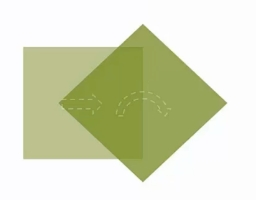
如果先做 rotate，再做 translate，那结果就不一样了,因为坐标的方向已经变化了，所以移动的方向也会跟着变化。
1 | transform: rotate(45deg) translate(50%); |
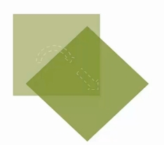
rotate() 旋转
语法
1 | rotate(<angle>) |
使用示例
1 | transform: rotate(45deg); |
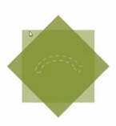
1 | transform: rotate(-60deg); |
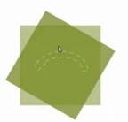
translate() 移动
语法
1 | translate(<translation-value> [,<translation-value>]?) |
1 | translateX(<translation-value>) |
使用示例
1 | transform:translate(50px); |
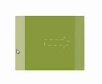
1 | transform: translate(50px,20%); |
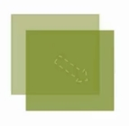
1 | transform: translateX(-50px); |
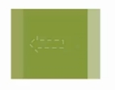
1 | transform: translateY(20%); |
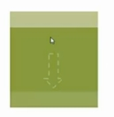
scale() 缩放
语法
1 | scale(<number> [,<number>]?) |
使用示例
1 | transform: scale(1.2); |
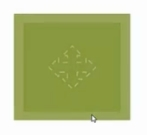
1 | transform: scale(1,1.2); |
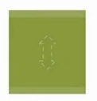
1 | transform: scaleX(1.2); |
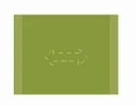
1 | transform: scaleY(1.2); |
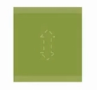
skew() 倾斜
语法
1 | skew(<angle> [,<angle>]?) |
使用示例
1 | transform: skew(30deg); |
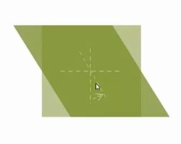
1 | transform: skew(30deg, 30deg); |
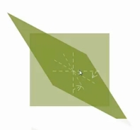
1 | transform: skewX(30deg); |
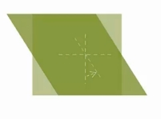
1 | transform: skewY(30deg); |
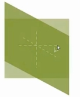
transform-origin
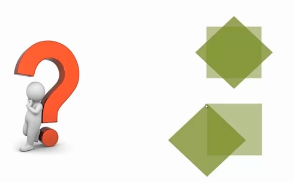
我们之前讲到的旋转，总是围绕着元素的中心点旋转，那有没有可能围绕着其他地方旋转呢？
那就要用到 transform-origin 方法，设置坐标轴的轴心，原点的位置
语法
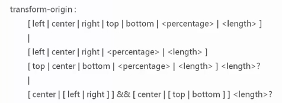
上面有三条语法：
第一条语法： 写一个值，可以是一个关键字，一个百分比，也可以是一个长度值
第二条语法： 写三个值，第一个值表示 x 方向，第二个值表示 y 方向，第三个值可写可不写，表示 x 方向
第三条语法：只使用关键字 + 长度值
使用示例
1 | transform-origin: 50% 50%; |
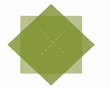
1 | transform-origin: 0 0; |
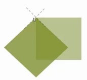
1 | transform-origin: 20%; |
perspective 透视效果
1 | perspective: none | <length> |
1 | <style> |
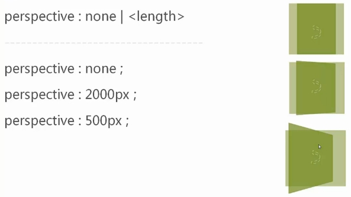
2000px 表示人眼到这个物体的距离，人眼离物体更近的话，透视效果就会更加明显。
perspective-origin 不同的透视角度
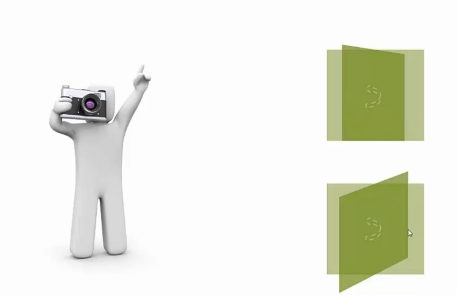
语法
- 可以只写一个值
- 可以只写两个值
- 可以写两个关键字
使用示例
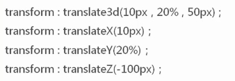
3d 方法
translate3d() 3d 移动
语法
1 | translate3d(<translate-value>, <translate-value>, <length>) |
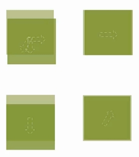
scale3d() 3d缩放
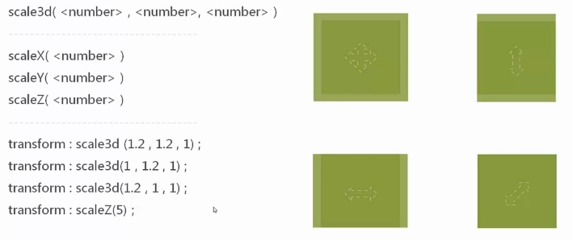
scaleZ() 方法只有在和其他方法连用时，才会对元素显示造成影响
rotate3d() 3d旋转
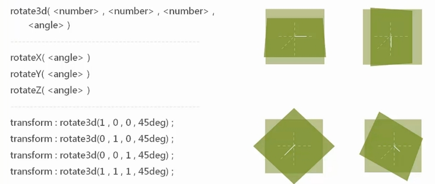
transform-style
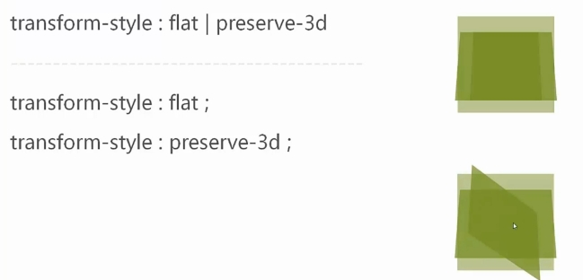
backface-visibility 背面是否可见
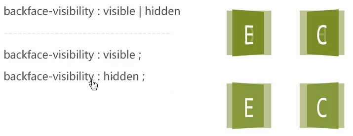